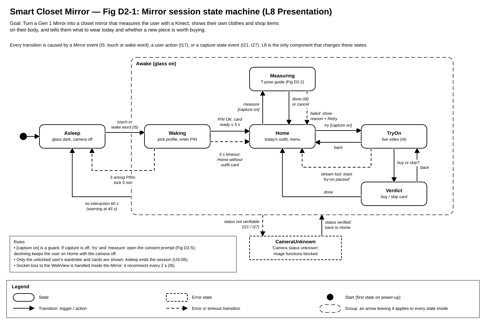
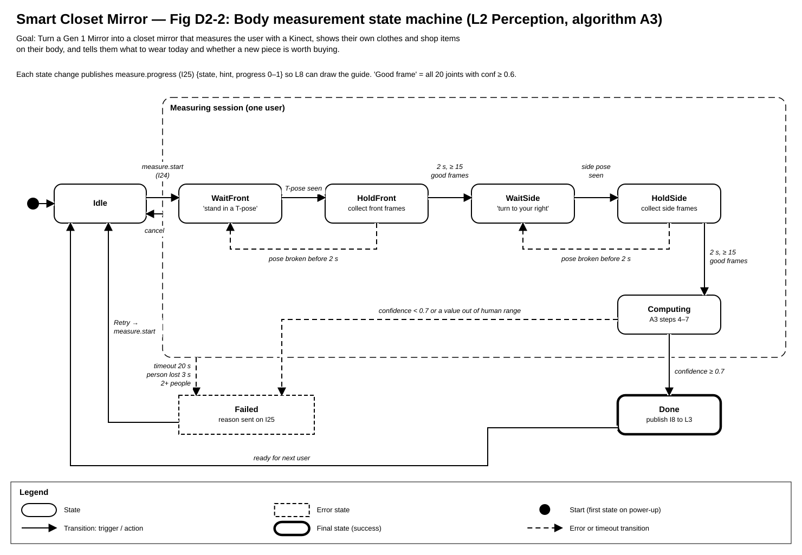
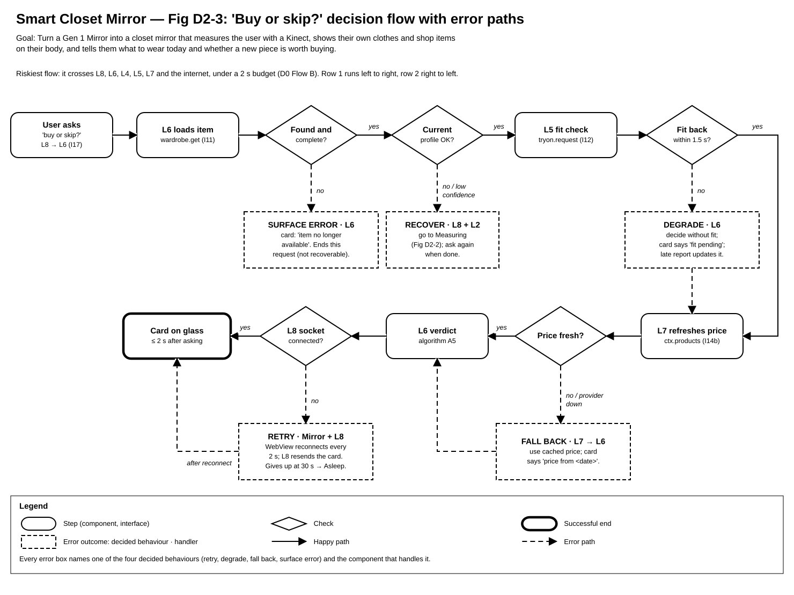
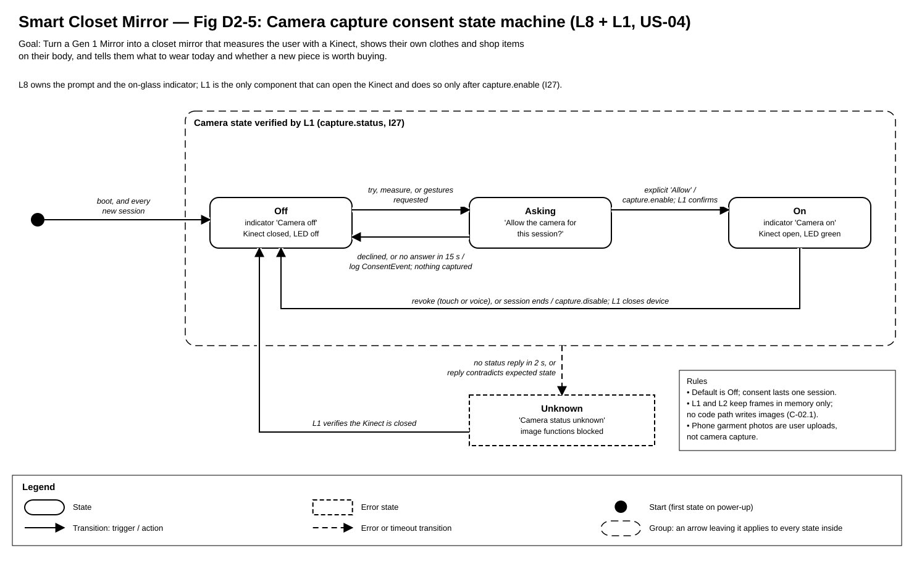
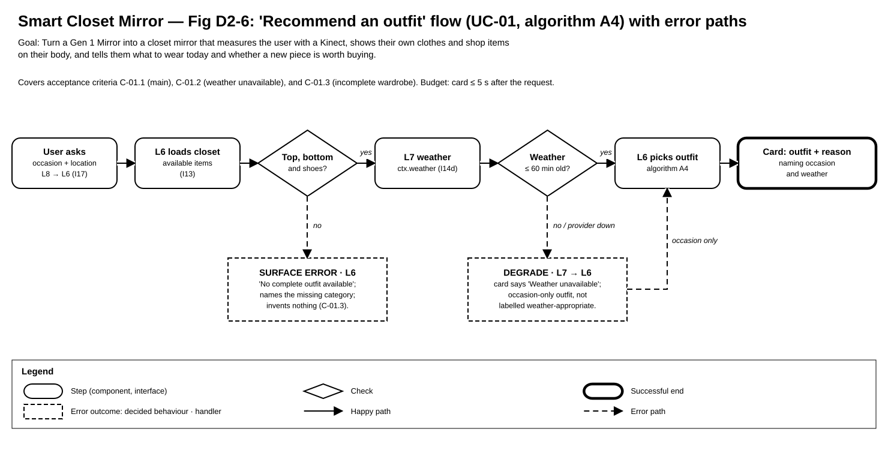
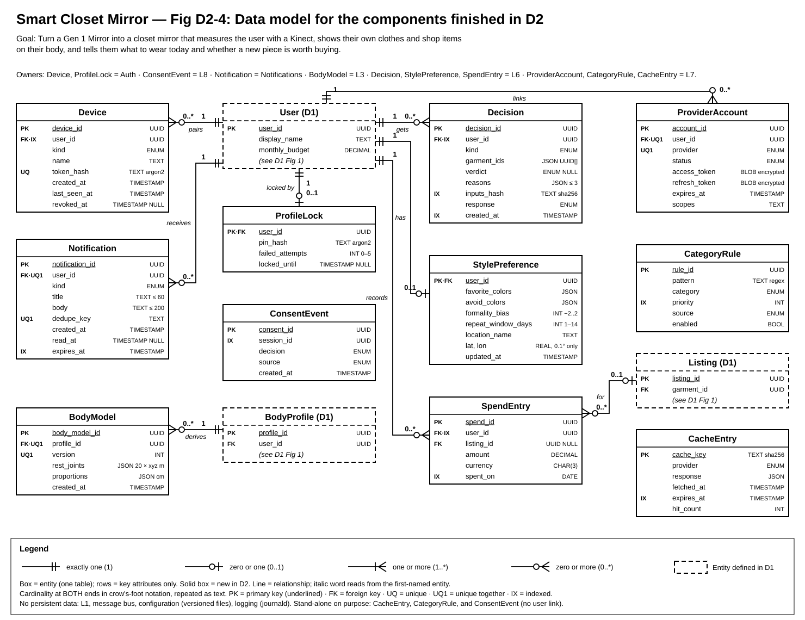

Project title: Smart Closet Mirror
What the system is. A Gen 1 Mirror (an Android 6 smart mirror) becomes the screen for a closet assistant. A Kinect 360 on top of the Mirror sees the user in colour and depth. A Ubuntu PC in the home (the "brain") does all the work in eight layers, L1–L8 (D0, Fig 1): capture, perception, body, wardrobe, try-on, decision, connectors to outside services, and presentation. The Kinect stays off until the person at the glass allows it for that session. The user adds clothes by photographing them with a phone. The Mirror shows them on the user's body in live video and tells them what to wear today and whether a shop item is worth buying.
What D1 covered. D1 detailed the two riskiest components. L4 Wardrobe has the main data model (D1 Fig 1) and the phone API. L5 Try-on has the fit check (algorithm A1) and the live garment drawing (algorithm A2).
What D2 adds.
| # | Gap or question | Current position |
|---|---|---|
| G1 | No shop product API or image search provider has been chosen yet (I14b, I14c). | L7 uses one adapter per provider, so the choice does not affect other layers. Candidates must allow non-commercial student use without fees. [team: pick by Week 8] |
| G2 | A profile PIN typed on the glass can be watched by someone standing nearby (US-05). | The keypad shuffles its digits on every unlock and does not echo them. The PIN protects wardrobe privacy, not payments. Unlocking from the paired phone is a possible later improvement. |
| G3 | Accuracy of body circumferences from one front and one side depth view (A3) is unknown. | Target ±2 cm against a tape measure on all four team members before Week 9. The calibration factors live in the configuration file. |
| G4 | Phone notifications are in-app only (no push), because push services would send data off the home network. | The phone page polls when open; the glass shows toasts. Accepted as a privacy trade-off. |
| G5 | Which machine is the brain PC, and does it have an NVIDIA GPU (needed for A2 and NVENC)? | Fallback: libx264 software encoding at 20 fps. [team: confirm] |
| G6 | Kinect 360 depth quality under the Mirror's own lighting and at 1–3 m in a typical room. | To be tested in the Week 8 hardware spike. |
| G7 | The traceability table (part 4) lists the five user stories but the mapping is not yet filled in. | [team: complete part 4] |
| G8 | The Week 4 user stories call the project "Smart Mirror Personal Stylist"; D0–D2 use "Smart Closet Mirror". | [team: choose one title and use it in every document and diagram] |
| G9 | The user stories do not mention try-on, body measurement, buy-or-skip, or looks from photos. | The reverse check in part 4 must either tie L3, L5, A3, A5, and A7 to a requirement or record them as scope to cut. [team decision] |
Each figure carries the project title, the goal statement, and its own legend. The legend on the figure is the authority; this table repeats it. D0 and D1 figures keep the conventions stated in those documents.
| Figure | Boxes and shapes | Lines |
|---|---|---|
| Fig D2-1 Mirror session (state machine) Fig D2-2 Body measurement (state machine) Fig D2-5 Camera consent (state machine) | Rounded box = state. Dashed square box = error state. Thick box = final (success) state. Black dot = start state. Large dashed rounded outline = a group of states. | Arrow = transition, labelled "trigger" or "trigger / action"; text in [brackets] is a guard that must be true. Dashed arrow = error or timeout transition. An arrow leaving a group applies to every state inside it. |
| Fig D2-3 "Buy or skip?" with error paths (flow) Fig D2-6 "Recommend an outfit" with error paths (flow) | Rounded box = step, naming the component and interface. Diamond = check. Thick box = successful end. Dashed box = error outcome, naming the decided behaviour (retry, degrade, fall back, surface error) and the handler. | Solid arrow = happy path. Dashed arrow = error path. Labels on arrows are check outcomes (yes / no). |
| Fig D2-4 Data model (entity-relationship) | Box = entity (table); rows = key attributes with types. Dashed box = entity defined in D1 Fig 1. Keys: PK = primary key (underlined), FK = foreign key, UQ = unique, UQ1 = unique together, IX = indexed. | Line = relationship; the italic verb reads from the first-named entity. Cardinality at both ends in crow's-foot notation, repeated as text: 1, 0..1, 1..*, 0..*. |
Interface IDs continue D0's numbering (I1–I17). D2 adds I18–I28 and splits I14 into I14a–d (see "Interface revisions"). Algorithm IDs continue D1's: A1–A2 in D1, A3–A7 here. Edge-case IDs are EC-<component>-<category>, for example EC-L7-X.
D1 already finished L4 Wardrobe and L5 Try-on. This part finishes everything else. Each component lists its data model, its behaviour, and its interface with errors. Every error, on the bus or over HTTP, uses the D1 shape {"error": {"code", "message", "fields"}}.
| ID | D0 definition | Problem | D2 revision |
|---|---|---|---|
| I6 → I6 + I18 | L8 → WebView: ui_state and control on one channel. | Mixed two concerns: screen content (idempotent, resendable) and device commands (not idempotent, such as waking the glass). | I6 ui.state (WebSocket, full state with seq) and I18 mirror.control (JS bridge, one command per message with an ack). |
| I7 | FrameBundle with raw shared-memory handles. | Leaked L1's memory layout; a consumer could read a buffer L1 was overwriting. | frame_bundle/2: ring slot 0–3 plus a generation counter. Consumers check the generation before and after reading and discard the frame if it changed. |
| I9 | Avatar {mesh_ref glTF, rig}. | After D1 moved rendering to a 2-D warp (A2), nothing reads a 3-D mesh; the mesh was an internal L3 detail. | BodyModel {profile_id, version, rest_joints, proportions}, the only fields A1 and A2 use. |
| I14 → I14a–d | One ContextQuery{kind, params: map}. | Too loose: an untyped map meant callers and L7 could disagree on parameters, and errors could not be specific. It also had no weather, which US-01 needs. | Four typed methods: I14a ctx.calendar_day, I14b ctx.products, I14c ctx.images, I14d ctx.weather [US-01]. |
| I5 | Mirror camera + mic → L8: presence at 2 Hz and voice commands. | Presence came from watching the room through the Mirror's camera before anyone agreed, which US-04 forbids. | I5 carries only touch events and wake-word or voice commands. The Mirror's camera is never used [US-04]. |
| I15 → I15 + I19 | L6 ↔ L2 carried image analysis and gesture events. | Two different timings (a 5 s request vs a stream of events) and directions on one ID. | I15 vision.analyze (request/reply) and I19 intent.gesture (L2 → L6 events). |
| I8 | BodyMeasurements. | L3 needed the T-pose joint positions to build the BodyModel and had no way to get them. | Adds rest_joints (20 × xyz, metres). Schema body_measurements/2. |
| New | Glue and control interfaces that D0 did not draw. | I20 notify.create · I21 ops.health · I22 pairing API · I23 config.changed · I24 measure.start / cancel (L6 → L2) · I25 measure.progress (L2 → L8) · I26 notifications API (phone) · I27 capture.enable / disable (L8 → L1) [US-04] · I28 auth.unlock (L8 → Auth) [US-05]. | |
| D1 entities | Additions to D1 Fig 1 (D1 itself is unchanged; this table records them). | Garment gains warmth: INT 1–3 and water_resistant: BOOL, set when a photo is uploaded and editable by PATCH; A4 needs them [US-01]. GET /api/v1/garments: the optional owner parameter now accepts only the caller's own id; any other returns 403 FORBIDDEN [US-05]. | |
Data model: no persistent data. It holds only a 4-slot ring buffer in shared memory and its device settings from configuration.
Behaviour (steps; the device states are Disabled → Opening → Streaming → Stalled, with Disabled the default):
| Interface | Input | Output | Errors |
|---|---|---|---|
| I7 frames.raw (publishes) | — | frame_bundle/2 {seq: uint64, ts: int64 ns, slot: int 0–3, generation: uint64, width: 640, height: 480} | None sent; a consumer that sees the generation change discards the frame. |
| capture.status (bus request) | {} | {state: enum{disabled, opening, streaming, stalled}, device_open: bool, fps: float, last_frame_ts: int64 ns} | NO_SERVICE (bus) if L1 is not running; L8 treats this as "Camera status unknown". |
| I27 capture.enable / capture.disable (bus request, from L8) | {session_id: UUID, required; consent_id: UUID, required for enable} | {state: "streaming" | "disabled", device_open: bool}, sent only after L1 has checked the device | NO_CONSENT — consent_id unknown or already revoked · DEVICE_NOT_FOUND · TIMEOUT (3 s at the caller → Unknown, Fig D2-5) |
| I21 ops.health (publishes) | — | See Logging and health. | DEVICE_NOT_FOUND and USB_TRANSFER_ERROR are reported as detail, with state DOWN. |
Data model: no persistent data. Model weights are files listed in configuration. Measurements go to L3 (I8), which stores them.
Behaviour. L2 only receives frames while capture is on (Fig D2-5), so pose, gestures, and measurement are unavailable when the user has declined [US-04]. L2 runs four jobs in one process:
Algorithm A3: body measurement from T-pose (state machine in Fig D2-2).
user_id and session_id.| Interface | Input | Output | Errors |
|---|---|---|---|
| I24 measure.start / measure.cancel (request) | {schema: "measure_start/1", user_id: UUID, required; session_id: UUID, required} | {accepted: true, state: "wait_front"} | BUSY — a session is already running · NO_PERSON — nobody in view at start |
| I25 measure.progress (publishes) | — | {session_id, state: enum (Fig D2-2), hint: string ≤ 60, progress: float 0–1, reason: string?} | On failure, state = failed and reason ∈ {TIMEOUT, PERSON_LOST, MULTIPLE_PEOPLE, LOW_CONFIDENCE, OUT_OF_RANGE}. |
| I8 body.measured (publishes) | — | body_measurements/2: D0 fields plus rest_joints: 20 × {x, y, z: float m} | Only published when confidence ≥ 0.7. |
| I10 body.pose, I19 intent.gesture (publishes) | — | I10 as in D0. I19 {user_id, intent: enum{next, back, select}, conf: float, ts} | None; when tracking is lost, I10 simply has no person. |
| I15 vision.analyze (request) | {request_id: UUID; image_refs: URI[], 1–6 items} | DetectedItems as in D0, plus color_name: string | TOO_MANY_IMAGES (> 6) · IMAGE_UNREADABLE (per image, in fields) · MODEL_UNAVAILABLE — weights missing or GPU out of memory · timeout 5 s at the caller |
Data model: BodyProfile (D1 Fig 1) and BodyModel (Fig D2-4). Each profile has 0..* model versions, one per algorithm version.
Behaviour (steps on each I8 message):
captured_at, so the fit cache stays valid.is_current on the old one, and set it on the new one.| Interface | Input | Output | Errors |
|---|---|---|---|
| I9 body.model (publishes) | — | body_model/1 {user_id, profile_id, version: int, rest_joints: 20 × xyz m, proportions: {torso_cm, arm_cm, leg_cm, shoulder_cm}} | — |
| body.current (request) | {user_id: UUID, required} | The latest body_model/1 for the current profile | NO_CURRENT_PROFILE — the user has never been measured · UNKNOWN_USER |
Data model: Outfit, OutfitItem, and WearEvent (D1 Fig 1), plus Decision, StylePreference, and SpendEntry (Fig D2-4). StylePreference holds the home location, rounded to 0.1°, for weather. Every query is scoped to the unlocked user [US-05].
garment_ids as a JSON snapshot, so a past decision still reads correctly after a garment is archived.inputs_hash lets L6 reuse a decision when nothing has changed.User.monthly_budget − the sum of this month's SpendEntry rows.Behaviour. The five algorithm parts for A1/A2 are in D1. A4, A5, and A7 are given here as inputs, outputs, steps, and cost; their edge cases go in part 3.
observed_at is no more than 60 minutes old.
| Interface | Input | Output | Errors |
|---|---|---|---|
| I17 ui.action → decision.view | UserAction as in D0; action adds measure, ask_verdict, and recommend with occasion: enum, optional and location_name: string, optional (default: StylePreference location) [US-01] | DecisionView as in D0; reasons limited to 3 | UNKNOWN_ACTION · STALE_VIEW (old view_id: L6 resends the current view) |
| GET /api/v1/decisions (phone) | kind: enum, optional · limit: int 1–50, default 20 · cursor: string, optional | 200 {items: [{decision_id, kind, verdict, reasons, garment_ids, created_at}], next_cursor} | 400 BAD_QUERY · 401 UNAUTHORIZED |
| POST /api/v1/spend (phone) | amount: decimal string > 0, required · currency: ISO 4217, required · listing_id: UUID, optional · spent_on: date, optional, default today | 201 {spend_id, budget_left: decimal string} | 400 VALIDATION_FAILED · 401 · 404 LISTING_NOT_FOUND |
| PUT /api/v1/preferences (phone) | StylePreference fields, all optional, with the ranges in Fig D2-4 | 200 StylePreference | 400 VALIDATION_FAILED · 401 |
Data model: ProviderAccount, CategoryRule, and CacheEntry (Fig D2-4). OAuth tokens are encrypted with a key kept in the secrets file, never in the database.
Behaviour (the same pipeline for every outside call):
A6 Calendar categorisation.
| Interface | Input | Output | Errors |
|---|---|---|---|
| I14a ctx.calendar_day | user_id: UUID, required · date: YYYY-MM-DD, required, today ± 7 days | {events: [{start, end: RFC 3339, title, category}], stale: bool, fetched_at} | NOT_LINKED · NEEDS_RELINK · PROVIDER_UNAVAILABLE (no cache) · BAD_QUERY |
| I14d ctx.weather [US-01] | lat, lon: float, required, rounded to 0.1° (about 10 km) before leaving the house | {temp_c, feels_like_c: float, precip_prob: int 0–100 %, condition: enum{clear, cloudy, rain, snow, storm, fog}, wind_kph: float, observed_at: RFC 3339, stale: bool}. Provider: Open-Meteo (no API key; free for non-commercial use). | PROVIDER_UNAVAILABLE — provider down and no cached reading · BAD_QUERY — coordinates out of range. A cached reading older than 60 min is still returned with stale = true; A4 treats it as "Weather unavailable". |
| I14b ctx.products | query: string 1–100, required · category, color, size_label: optional · max_price: decimal, optional · currency: ISO 4217 · limit: int 1–20, default 10 | {products: [{sku, shop, title, price, currency, url, sizes, image_ref}], stale, fetched_at} | PROVIDER_UNAVAILABLE · RATE_LIMITED (local bucket empty for > 3 s) · BAD_QUERY |
| I14c ctx.images | query: person name, 1–60 chars, required · limit: int 1–6, default 6 | {image_refs: URI[] (downloaded into the data store), stale, fetched_at} | PROVIDER_UNAVAILABLE · RATE_LIMITED · BAD_QUERY |
| Provider linking (phone) | POST /api/v1/providers/{provider}/link · GET …/callback?code&state · DELETE …/{provider} | 201 {auth_url} · 302 to the phone page after the callback · 204 | 400 UNKNOWN_PROVIDER · 400 BAD_STATE (CSRF state mismatch) · 502 PROVIDER_REFUSED |
Data model: ConsentEvent (Fig D2-4). It records each allow, decline, or revoke with a session id but no user link and no image [US-04]. Session state lives in memory and is rebuilt from L6 after a restart; screen text and layout come from configuration.
Behaviour: the state machine in Fig D2-1, plus these steps:
seq + 1.| Interface | Input | Output | Errors |
|---|---|---|---|
| I5 (in, WebSocket) | touch {x, y: int px, ts} · wake_word {ts} · voice_command {text ≤ 40, confidence 0–1}. No camera data [US-04]. | — | Close 4401 — bad device token · 4409 — a second Mirror connection replaced this one |
| I6 ui.state (out, WebSocket) | — | ui_state/2 {seq: int, screen: enum (Fig D2-1 states), cards: Card[] ≤ 4, banner: {kind, text} | null, toast: string | null} | Close 4500 — server error; the Mirror reconnects every 2 s |
| I27 capture.enable / disable (out, to L1) | — | See L1 | TIMEOUT or NO_SERVICE → state Unknown, "Camera status unknown" (Fig D2-5) |
| I18 mirror.control (out, JS bridge) | — | {cmd: enum{wake, sleep, brightness}, value: int 0–100?, cmd_id: UUID}; the Mirror replies {cmd_id, ok: bool} | No reply in 1 s: retry once, then log (glass state unknown) |
Data store — data model: the union of D1 Fig 1 and Fig D2-4, in one SQLite file (brain.db), with images under files/<garment_id>/.
Data store — behaviour:
foreign_keys = ON, busy_timeout 2,000 ms..backup of the database plus a copy of the files to an external drive, keeping 7 copies.Data store — interface: one repository module per owning component (Python functions; no shared SQL strings).
Message bus — data model: no persistent data.
Message bus — behaviour: one broker process, busd. A ZeroMQ XSUB/XPUB proxy handles events, and a ROUTER socket handles request/reply by service name. Heartbeats every 1 s.
Message bus — interface:
{schema: "name/version", msg_id: UUID, corr_id: UUID | null, sender: string, ts: int64 ns, body: object}.publish(topic, body) and request(service, body, timeout_ms) → body.Data model: Device and ProfileLock (Fig D2-4).
Behaviour (pairing steps):
/pair and enters the code.dv_<device_id>.<32 random bytes, base64url>. The token is shown only once; only its argon2id hash is stored.The Mirror's own token is provisioned once at install.
Profile unlock and wardrobe separation [US-05] (steps):
| Interface | Input | Output | Errors |
|---|---|---|---|
| auth.pair_code (bus, from L8) | {user_id: UUID, required} | {code: 6 digits, expires_at} | UNKNOWN_USER |
| I28 auth.unlock (bus, from L8) | {user_id: UUID, required; pin: 4–6 digits, required} | {session_id: UUID, user_id, expires_at} | WRONG_PIN (remaining attempts in fields) · LOCKED (until locked_until) · NO_PIN_SET — the user must set one from their phone |
| PUT /api/v1/profile/pin (phone) | pin: 4–6 digits, required; current_pin: required if a PIN is already set | 204 | 400 VALIDATION_FAILED · 401 · 403 WRONG_CURRENT_PIN |
| I22 POST /api/v1/pair | code: 6 digits, required · device_name: 1–40 chars, required | 201 {device_id: UUID, token: string (shown once), user_id} | 404 CODE_UNKNOWN · 410 CODE_EXPIRED · 429 TOO_MANY_ATTEMPTS |
| GET / DELETE /api/v1/devices[/{id}] | Bearer token; id: UUID for delete | 200 {items: [{device_id, kind, name, last_seen_at}]} · 204 | 401 UNAUTHORIZED · 404 NOT_FOUND · 409 CANNOT_REVOKE_SELF |
| verify(token) (in-process) | token: string | Device | Unauthorized (→ HTTP 401 / WebSocket close 4401) |
Data model: Notification (Fig D2-4).
Behaviour:
The kinds are outfit_ready, relink_needed, measure_due (30 days after the last measurement), and system.
| Interface | Input | Output | Errors |
|---|---|---|---|
| I20 notify.create (bus) | user_id: UUID, required · kind: enum, required · title: 1–60 chars · body: ≤ 200 chars · dedupe_key: string, optional · ttl_h: int 1–720, default 72 | {notification_id: UUID, deduped: bool} | BAD_INPUT · UNKNOWN_USER |
| I26 GET /api/v1/notifications | unread: bool, optional · limit: 1–50, default 20 · cursor, optional | 200 {items: [{notification_id, kind, title, body, created_at, read_at}], next_cursor} | 400 BAD_QUERY · 401 |
| POST /api/v1/notifications/{id}/read | id: UUID | 204 | 401 · 404 NOT_FOUND |
Data model: no persistent data in the database; configuration must still work when the database is the broken part. Three things on disk:
/etc/scm/config.yaml: in git as config.example.yaml./etc/scm/secrets.env: mode 600 and never committed. It holds the OAuth client secrets and the token encryption key./var/lib/scm/config_history/ [US-03]: a numbered copy of every configuration that loaded successfully, plus index.json with {version, sha256, applied_at, known_good: bool}.Key groups: capture, perception thresholds, A1 ease bands, A3 calibration, A4 weights, L7 rates and TTLs, timeouts, UI text.
Behaviour:
scmctl reload sends SIGHUP. The process validates again and applies only keys marked reloadable (thresholds, ease bands, rules). It then publishes I23. An invalid reload keeps the old configuration and logs an error.scmctl status lists each component's health, so a maintainer can see which service failed.scmctl config rollback restores the latest known-good version (or --to N), checks it, and restarts the affected services. The rollback is logged.| Interface | Input | Output | Errors |
|---|---|---|---|
| config.get (in-process) | key: dotted string | typed value | KeyError at start-up (never at run time, because the schema has defaults) |
| I23 config.changed (bus) | — | {version: int, changed_keys: string[]} | — |
| scmctl config check (CLI) | path | exit code 0, or 1 with a list of errors | — |
| scmctl status (CLI) [US-03] | — | one line per component: name, state (ok / degraded / down), since, detail | exit 2 if busd is unreachable ("health unknown") |
| scmctl config rollback (CLI) [US-03] | --to N: int, optional (default: latest known good) | exit 0, plus the restored version and the services restarted | exit 1 NO_KNOWN_GOOD · exit 1 INVALID_VERSION (fails the check; nothing changed) · exit 3 RESTART_FAILED (version restored, a service still down) |
Data model: no persistent data in the database. Logs go to journald, capped at 500 MB or 14 days.
Behaviour:
corr_id follows one user request across layers.| Interface | Input | Output | Errors |
|---|---|---|---|
| log(event, **fields) (in-process) | event: snake_case string; fields: JSON-safe | — | Fields with blocked names are dropped and counted. |
| I21 ops.health (bus) | — | {component, state: enum{ok, degraded, down}, detail: ≤ 120 chars, metrics: {fps?, p95_ms?, queue?}} | — |
| GET /api/v1/health (phone) | — | 200 {overall: enum, components: [{name, state, since}]} | 401 |

Fig D2-1. Source: Design_Diagrams/D2_fig1_mirror_session.drawio.

Fig D2-2. Source: Design_Diagrams/D2_fig2_measurement.drawio.

Fig D2-3, the figure required to show error paths. Source: Design_Diagrams/D2_fig3_buy_or_skip_errors.drawio.

Fig D2-5 [US-04, UC-02]. Source: Design_Diagrams/D2_fig5_camera_consent.drawio.

Fig D2-6 [US-01, UC-01]. Source: Design_Diagrams/D2_fig6_outfit_errors.drawio.

Fig D2-4. Source: Design_Diagrams/D2_fig4_data_model.drawio.
| ID | Component | Category | Edge case | Design decision | Handler | Recoverable? |
|---|---|---|---|---|---|---|
| EC-L1-B | L1 Capture | Boundary values | ||||
| EC-L1-T | L1 Capture | Timing / concurrency | ||||
| EC-L1-I | L1 Capture | Bad or missing input | ||||
| EC-L1-X | L1 Capture | External dependency | ||||
| EC-L2-B | L2 Perception | Boundary values | ||||
| EC-L2-T | L2 Perception | Timing / concurrency | ||||
| EC-L2-I | L2 Perception | Bad or missing input | ||||
| EC-L2-X | L2 Perception | External dependency | ||||
| EC-L3-B | L3 Body | Boundary values | ||||
| EC-L3-T | L3 Body | Timing / concurrency | ||||
| EC-L3-I | L3 Body | Bad or missing input | ||||
| EC-L3-X | L3 Body | External dependency | ||||
| EC-L4-B | L4 Wardrobe | Boundary values | ||||
| EC-L4-T | L4 Wardrobe | Timing / concurrency | ||||
| EC-L4-I | L4 Wardrobe | Bad or missing input | ||||
| EC-L4-X | L4 Wardrobe | External dependency | ||||
| EC-L5-B | L5 Try-on | Boundary values | ||||
| EC-L5-T | L5 Try-on | Timing / concurrency | ||||
| EC-L5-I | L5 Try-on | Bad or missing input | ||||
| EC-L5-X | L5 Try-on | External dependency | ||||
| EC-L6-B | L6 Decision | Boundary values | ||||
| EC-L6-T | L6 Decision | Timing / concurrency | ||||
| EC-L6-I | L6 Decision | Bad or missing input | ||||
| EC-L6-X | L6 Decision | External dependency | ||||
| EC-L7-B | L7 Connectors | Boundary values | ||||
| EC-L7-T | L7 Connectors | Timing / concurrency | ||||
| EC-L7-I | L7 Connectors | Bad or missing input | ||||
| EC-L7-X | L7 Connectors | External dependency | ||||
| EC-L8-B | L8 Presentation | Boundary values | ||||
| EC-L8-T | L8 Presentation | Timing / concurrency | ||||
| EC-L8-I | L8 Presentation | Bad or missing input | ||||
| EC-L8-X | L8 Presentation | External dependency | ||||
| EC-DS-B | Data store | Boundary values | ||||
| EC-DS-T | Data store | Timing / concurrency | ||||
| EC-DS-I | Data store | Bad or missing input | ||||
| EC-DS-X | Data store | External dependency | ||||
| EC-BUS-B | Message bus | Boundary values | ||||
| EC-BUS-T | Message bus | Timing / concurrency | ||||
| EC-BUS-I | Message bus | Bad or missing input | ||||
| EC-BUS-X | Message bus | External dependency | ||||
| EC-AUTH-B | Authentication | Boundary values | ||||
| EC-AUTH-T | Authentication | Timing / concurrency | ||||
| EC-AUTH-I | Authentication | Bad or missing input | ||||
| EC-AUTH-X | Authentication | External dependency | ||||
| EC-NOTIF-B | Notifications | Boundary values | ||||
| EC-NOTIF-T | Notifications | Timing / concurrency | ||||
| EC-NOTIF-I | Notifications | Bad or missing input | ||||
| EC-NOTIF-X | Notifications | External dependency | ||||
| EC-CFG-B | Configuration | Boundary values | ||||
| EC-CFG-T | Configuration | Timing / concurrency | ||||
| EC-CFG-I | Configuration | Bad or missing input | ||||
| EC-CFG-X | Configuration | External dependency | ||||
| EC-LOG-B | Logging and health | Boundary values | ||||
| EC-LOG-T | Logging and health | Timing / concurrency | ||||
| EC-LOG-I | Logging and health | Bad or missing input | ||||
| EC-LOG-X | Logging and health | External dependency |
| Req ID | Requirement (short) | F / NF | Priority | Design elements | How they satisfy it | Edge cases · figures |
|---|---|---|---|---|---|---|
| US-01 | Outfit suggestions from owned clothing, the occasion, and current weather (UC-01; C-01.1–C-01.3) | |||||
| US-02 | Add, correct, and remove clothing items in my personal inventory | |||||
| US-03 | Maintainer can identify a failed service and restore the last working configuration | |||||
| US-04 | Know whether the camera is active and decline image capture (UC-02; C-02.1–C-02.3) | |||||
| US-05 | Access only my own wardrobe and preferences on a shared mirror | |||||
| NF-01 | ||||||
| NF-02 | ||||||
| NF-03 |
| Component | Requirements it serves (IDs) | If none: keep (why) or cut |
|---|---|---|
| L1 Capture | ||
| L2 Perception | ||
| L3 Body | ||
| L4 Wardrobe | ||
| L5 Try-on | ||
| L6 Decision | ||
| L7 Connectors | ||
| L8 Presentation | ||
| Data store, message bus | ||
| Authentication | ||
| Notifications | ||
| Configuration | ||
| Logging and health |
| Kind | Elements and where they are defined |
|---|---|
| Entities | D1 Fig 1: User, BodyProfile, Garment, GarmentSize, GarmentAsset, Listing, Outfit, OutfitItem, WearEvent, FitResult. Fig D2-4: Device, ProfileLock, ConsentEvent, Notification, BodyModel, Decision, StylePreference, SpendEntry, ProviderAccount, CategoryRule, CacheEntry. Added attributes: Garment.warmth, Garment.water_resistant. |
| Algorithms | A1 fit evaluation (D1 §3) · A2 live garment overlay (D1 §3) · A3 body measurement (L2, Fig D2-2) · A4 outfit recommendation (L6, Fig D2-6) · A5 buy-or-skip verdict (L6, Fig D2-3) · A6 calendar categorisation (L7) · A7 look from a photo (L6) |
| HTTP endpoints | D1 §5: POST / GET / PATCH / DELETE /api/v1/garments. D2: GET /api/v1/decisions · POST /api/v1/spend · PUT /api/v1/preferences · /api/v1/providers/* · POST /api/v1/pair · PUT /api/v1/profile/pin · /api/v1/devices · /api/v1/notifications · GET /api/v1/health |
| Bus methods and events | wardrobe.get (I11) · tryon.request (I12) · vision.analyze (I15) · ctx.calendar_day / products / images / weather (I14a–d) · capture.enable / disable (I27) · auth.unlock (I28) · measure.start / cancel (I24) · measure.progress (I25) · body.current · capture.status · auth.pair_code · notify.create (I20) · ops.health (I21) · config.changed (I23) · intent.gesture (I19) |
| Interfaces | I1–I17 (D0 §4, revised above) · I18–I28 (D2) |
| Figures | D0: block diagram, data flow (Flows A, B). D1: Fig 1 data model. D2: Fig D2-1 session, D2-2 measurement, D2-3 buy-or-skip error paths, D2-4 data model, D2-5 camera consent, D2-6 outfit error paths. |
| Timing budgets | Motion → glass ≤ 250 ms (D0 Flow A; A2 30 ms, encode 25 ms) · verdict ≤ 2 s (D0 Flow B, Fig D2-3) · outfit card ≤ 5 s after the request (Figs D2-1, D2-6) · weather no older than 60 min (A4, C-01.2) · fit reply ≤ 1.5 s (I12) |
| # | We chose ___ over ___ because ___. | We accepted the trade-off of ___ because ___. | Changed by review? (item ID) |
|---|---|---|---|
| R1 | |||
| R2 | |||
| R3 | |||
| R4 | |||
| R5 | |||
| R6 | |||
| R7 | |||
| R8 |
Decisions in D1 and D2 that may be worth an entry (pick the significant ones; the reasoning is yours):
Design_Diagrams/Peer_Review_Notes.md; keep the two in step. Add one block of rows per reviewing team. Priorities: must-fix, worth considering, out of scope for now. Apply the must-fix items to D2 before submitting and mark them in part 5.| ID | Criterion | Issue | Raised by (team) | Action | Owner | Priority | Due |
|---|---|---|---|---|---|---|---|
| PR-01 | |||||||
| PR-02 | |||||||
| PR-03 | |||||||
| PR-04 | |||||||
| PR-05 | |||||||
| PR-06 |
Criterion that drew the most feedback: [completeness / feasibility / clarity / risk, and why]
Top two issues we raised while reviewing other teams: